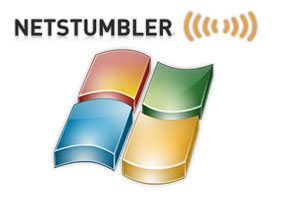

22 best Computer hacking app and tool
1) Netsparker
Netsparker is an easy to use web application security scanner that can automatically find SQL Injection, XSS and other vulnerabilities in your web applications and web services. It is available as on-premises and SAAS solution.
Features
- Dead accurate vulnerability detection with the unique Proof-Based Scanning Technology.
- Minimal configuration required. Scanner automatically detects URL rewrite rules, custom 404 error pages.
- REST API for seamless integration with the SDLC, bug tracking systems etc.
- Fully scalable solution. Scan 1,000 web applications in just 24 hours.
2) Acunetix
Acunetix is a fully automated ethical hacking solution that mimics a hacker to keep one step ahead of malicious intruders. The web application security scanner accurately scans HTML5, JavaScript and Single-page applications. It can audit complex, authenticated webapps and issues compliance and management reports on a wide range of web and network vulnerabilities.
Features
- Scans for all variants of SQL Injection, XSS, and 4500+ additional vulnerabilities
- Detects over 1200 WordPress core, theme, and plugin vulnerabilities
- Fast & Scalable – crawls hundreds of thousands of pages without interruptions
- Integrates with popular WAFs and Issue Trackers to aid in the SDLC
- Available On Premises and as a Cloud solution.
3) Probe.ly
Probe.ly continuously scans for vulnerabilities in your Web Applications. It allows its customers to manage the life cycle of vulnerabilities and provides them with some guidance on how to fix them. Probe.ly is a security tool built having Developers in mind.
Features
- Scans for SQL Injections, XSS, OWASP TOP10 and over 5000 vulnerabilities, including 1000 WordPress and Joomla vulnerabilities
- Full API - All features of Probely are also available through an APIDetects over 1200 WordPress core, theme, and plugin vulnerabilities
- Integration with your CI tools, Slack and Jira
- Unlimited team members
- PDF Reports to showcase your security
- Diverse scanning profiles (ranging from safe to aggressive scans)
- Multiple Environment Targets - Production (non-intrusive scans) and Testing (intrusive and complete scans)
4) HTTPCS
Security by HTTPCS is an ethical hacking vulnerability scanner that simulates attacks against your websites and Web Apps like a hacker would do in order to detect security vulnerabilities.
Try our "14-day free trial" offer and protect your website or web application 365 days a year thanks to daily automated audits (in black box or grey box mode).
Adopt the Offensive Cyber Security method to protect your business.
Features
- Daily automated Black Box and Grey Box audits
- Zero-False-Positive guarantee with attack simulation button
- OWASP Top 10, CVE and much more !
- 100% mapping thanks to its Headless technology
- List of vulnerabilities, risks and impacted Standards
5) Burp Suite
Burp Suite is a useful platform for performing Security Testing of web applications. Its various tools work seamlessly together to support the entire pen testing process. It spans from initial mapping to analysis of an application's attack surface.
Features
- • Scan open-source software and custom-built applications
- • An easy to use Login Sequence Recorder allows the automatic scanning
- • Review vulnerability data with built-in vulnerability management.
- • Easily provide wide variety of technical and compliance reports
- • Detects Critical Vulnerabilities with 100% Accuracy
- • Automated crawl and scan
- • Advanced scanning feature for manual testers
- • Cutting-edge scanning logic
6) Ettercap:
Ettercap is an ethical hacking tool. It supports active and passive dissection includes features for network and host analysis.
Features
• It supports active and passive dissection of many protocols
• Feature of ARP poisoning to sniff on a switched LAN between two hosts
• Characters can be injected into a server or to a client while maintaining a live connection
• Ettercap is capable of sniffing an SSH connection in full duplex
• Allows sniffing of HTTP SSL secured data even when the connection is made using proxy
• Allows creation of custom plugins using Ettercap's API
7) Aircrack:
Aircrack is a trustable ethical hacking tool. It cracks vulnerable wireless connections. It is powered by WEP WPA and WPA 2 encryption Keys.
Features
• More cards/drivers supported
• Support all types of OS and platforms
• New WEP attack: PTW
• Support for WEP dictionary attack
• Support for Fragmentation attack
• Improved tracking speed
8) Angry IP Scanner:
Angry IP Scanner is open-source and cross-platform ethical hacking tool. It scans IP addresses and ports.
Features
• Scans local networks as well as the Internet
• Free and open-source tool
• Random or file in any format
• Exports results into many formats
• Extensible with many data fetchers
• Provides command-line interface
• Works on Windows, Mac, and Linux
• No need for Installation
9) GFI LanGuard:
GFI LanGuard is an ethical tool that scan networks for vulnerabilities. It can acts as your 'virtual security consultant' on demand. It allows creating an asset inventory of every device.
Features
• It helps to maintain a secure network over time is to know which changes are affecting your network and
• Patch management: Fix vulnerabilities before an attack
• Analyze network centrally
• Discover security threats early
• Reduce cost of ownership by centralizing vulnerability scanning
• Help to maintain a secure and compliant network
10) Savvius:
It is an ethical hacking tool. It performance issues and reduces security risk with the deep visibility provided by Omnipeek. It can diagnose network issues faster and better with Savvius packet intelligence.
Features
• Powerful, easy-to-use network forensics software
• Savvius automates the capture of the network data required to quickly investigate security alerts
• Software and integrated appliance solutions
• Packet intelligence combines deep analysis
• Rapid resolution of network and security issues
• Easy to use Intuitive workflow
• Expert and responsive technical support
• Onsite deployment for appliances
• Commitment to our customers and our products
11) QualysGuard:
 Qualys guard helps businesses streamline their security and compliance solutions. It also builds security into their digital transformation initiatives. This tool can also check the performance vulnerability of the online cloud systems.
Qualys guard helps businesses streamline their security and compliance solutions. It also builds security into their digital transformation initiatives. This tool can also check the performance vulnerability of the online cloud systems.
Features
• It is trusted globally
• No hardware to buy or manage
• It is a scalable, end-to-end solution for all aspects of IT security
• Vulnerability data securely stored and processed on an n-tiered architecture of load-balanced servers
• It sensor provides continuous visibility
• Data analyzed in real time
• It can respond to threats in a real-time
12) WebInspect:
 WebInspect is automated dynamic application security testing that allows performing ethical hacking techniques. It provides comprehensive dynamic analysis of complex web applications and services.
WebInspect is automated dynamic application security testing that allows performing ethical hacking techniques. It provides comprehensive dynamic analysis of complex web applications and services.
Features
• Allows to test dynamic behavior of running web applications to identify security vulnerabilities
• Keep in control of your scan by getting relevant information and statistics at a glance
• Centralized Program Management
• Advanced technologies, such as simultaneous crawl professional-level testing to novice security testers
• Easily inform management on vulnerability trending, compliance management, and risk oversight
13) Hashcat:
Hashcat is a robust password cracking ethical hacking tool. It can help users to recover lost passwords, audit password security, or just find out what data is stored in a hash.
Features
• Open-Source platform
• Multi-Platform Support
• Allows utilizing multiple devices in the same system
• Utilizing mixed device types in the same system
• It supports distributed cracking networks
• Supports interactive pause/resume
• Supports sessions and restore
• Built-in benchmarking system
• Integrated thermal watchdog
• Supports automatic performance tuning
14) L0phtCrack:
L0phtCrack 6 is useful password audit and recovery tool. It identifies and assesses password vulnerability over local machines and networks.
Features
• Multicore & multi-GPU support helps to optimize hardware
• Easy to customize
• Simple Password Loading
• Schedule sophisticated tasks for automated enterprise-wide password
• Fix weak passwords issues by forcing password resets or locking accounts
• It allows multiple auditing OSes
15) Rainbow Crack:
RainbowCrack is a password cracking tool widely used for ethical hacking. It cracks hashes with rainbow tables. It uses time-memory tradeoff algorithm for this purpose.
Features
• Full time-memory trade-off tool suites, including rainbow table generation
• It Support rainbow table of any hash algorithm
• Support rainbow table of any charset
• Support rainbow table in raw file format (.rt) and compact file format
• Computation on multi-core processor support
• GPU acceleration with multiple GPUs
• Runs on Windows OS and Linux
• Unified rainbow table file format on every supported OS
• Command line user interface
• Graphics user interface
16) IKECrack:
IKECrack is an open source authentication crack tool. This ethical hacking tool is designed to brute-force or dictionary attack. This tool also allows performing cryptography tasks.
Features
• IKECrack is a tool that allows performing Cryptography tasks
• Initiating client sends encryption options proposal, DH public key, random number, and an ID in an unencrypted packet to the gateway/responder.
• It is freely available for both personal and commercial use. Therefore, it is perfect choice for user who wants an option for Cryptography programs
17) IronWASP:
IronWASP is an open source software for ethical hacking too. It is web application vulnerability testing. It is designed to be customizable so that users can create their custom security scanners using it.
Features
• GUI based and very easy to use
• It has powerful and effective scanning engine
• Supports for recording Login sequence
• Reporting in both HTML and RTF formats
• Checks for over 25 types of web vulnerabilities
• False Positives and Negatives detection support
• It supports Python and Ruby
• Extensible using plug-ins or modules in Python, Ruby, C# or VB.NET
18) Medusa:
Medusa is one of the best online brute-force, speedy, parallel password crackers ethical hacking tool. This tool is also widely used for ethical hacking.
Features
• It is designed in such a way that it is speedy, massively parallel, modular, login brute-forcer
• The main aim of this tool is to support as many services which allow remote authentication
• Allows to perform Thread-based parallel testing and Brute-force testing
• Flexible user input. It can be specified in a variety of ways
• All the service module exists as an independent .mod file.
• No modifications are needed to the core application to extend the supported list of services for brute-forcing
19) NetStumbler:
NetStumbler is used to detect wireless networks on the Windows platform.
Features
• Verifying network configurations
• Finding locations with poor coverage in a WLAN
• Detecting causes of wireless interference
• Detecting unauthorized ("rogue") access points
• Aiming directional antennas for long-haul WLAN links
20) SQLMap:
SQLMap automates the process of detecting and exploiting SQL Injection weaknesses. It is open source and cross platform. It supports the following database engines.
Features
• MySQL
• Oracle
• Postgre SQL
• MS SQL Server
• MS Access
• IBM DB2
• SQLite
• Firebird
• Sybase and SAP MaxDB
It supports the following SQL Injection Techniques;
• Boolean-based blind
• Time-based blind
• Error-based
• UNION query
• Stacked queries and out-of-band.
21) Cain & Abel:
Cain & Abel is a Microsoft Operating System passwords recovery tool. It is used to -
Features
• Recover MS Access passwords
• Uncover password field
• Sniffing networks
• Cracking encrypted passwords using dictionary attacks, brute-force, and cryptanalysis attacks.
22) Nessus
Nessus can be used to perform;
• Remote vulnerability scanner
• Password dictionary attacks
• Denial of service attacks.
It is closed source, cross platform and free for personal use.